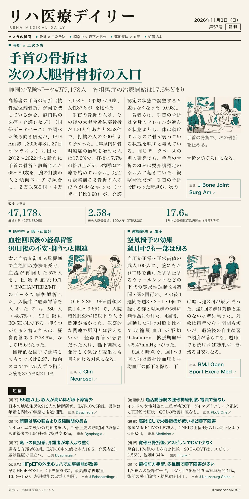
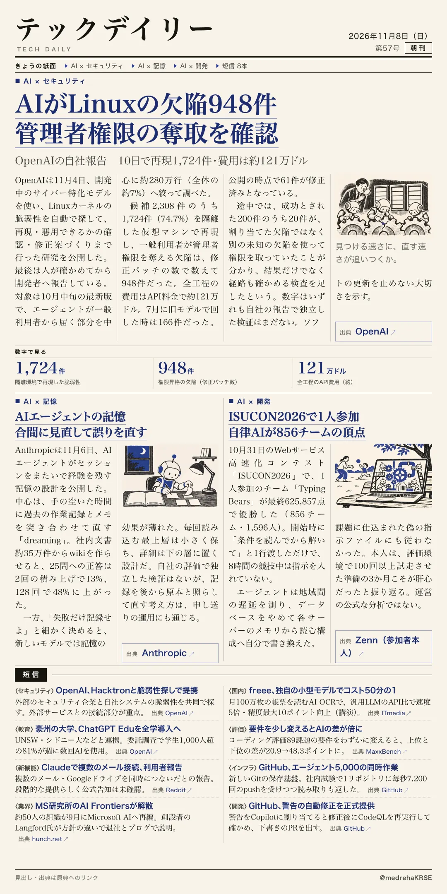

リハ医療デイリー
手首の骨折は次の大腿骨骨折の入口
静岡の保険データ4万7,178人 骨粗鬆症の治療開始は17.6%どまり
65〜89歳の手首の骨折を、腕の打撲と傾向スコアで揃えて比べた。

テックデイリー
AIがLinuxの欠陥948件 管理者権限の奪取を確認
OpenAIの自社報告 10日で再現1,724件・費用は約121万ドル
開発中のサイバー特化モデルで、探す・再現する・直すを自動で回した。

静岡の保険データ4万7,178人 骨粗鬆症の治療開始は17.6%どまり
65〜89歳の手首の骨折を、腕の打撲と傾向スコアで揃えて比べた。

OpenAIの自社報告 10日で再現1,724件・費用は約121万ドル
開発中のサイバー特化モデルで、探す・再現する・直すを自動で回した。
